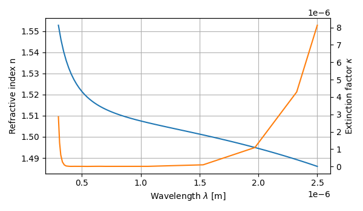

Scatterer material¶
Built-in material¶
PyMieSim allows you to use the bank of Material to emulate scatterer refracive index which vary as a function of the source wavelength.
To use the Material follow the snippet:
1 2 3 4 5 6 7 8 9 10 11 | from PyMieSim.Scatterer import Sphere
from PyMieSim.Source import PlaneWave
from PyMieSim import Material
Source = PlaneWave(Wavelength = 450e-9,
Polarization = 0,
E0 = 1)
Scat = Sphere(Diameter = 800e-9,
Source = Source,
Material = Material('BK7'))
|
Generate new material¶
PyMieSim has a toolbox to fetch and load new material data. Using the largest refracitve index bank: refractiveindex.info PyMieSim can directly download and save complex refractive index for a specific material. Doing so the toolbox will save locally the data in the PyMieSim/Data/_Material/data folder and will update the PyMieSim/Meta.json file. Here is what the Meta file look like
1 2 3 4 5 6 7 8 9 10 11 12 13 14 15 16 17 18 19 20 21 22 | {
"remote": {
"Aluminium": "https://refractiveindex.info/data_csv.php?datafile=data/main/Al/Rakic.yml",
"BK7": "https://refractiveindex.info/data_csv.php?datafile=data/glass/schott/N-BK7.yml",
"FusedSilica": "https://refractiveindex.info/data_csv.php?datafile=data/main/SiO2/Malitson.yml",
"Silver": "https://refractiveindex.info/data_csv.php?datafile=data/main/Ag/Johnson.yml",
"SodaLimeGlass": "https://refractiveindex.info/data_csv.php?datafile=data/glass/misc/soda-lime/Rubin-clear.yml",
"BorosilicateCrown": "https://refractiveindex.info/data_csv.php?datafile=data/glass/hoya/BSC7.yml",
"Gold": "https://refractiveindex.info/data_csv.php?datafile=data/main/Au/Johnson.yml",
"Air": "https://refractiveindex.info/data_csv.php?datafile=data/other/mixed%20gases/air/Ciddor.yml"
},
"local": {
"Aluminium": "Aluminium.npz",
"BK7": "BK7.npz",
"FusedSilica": "FusedSilica.npz",
"Silver": "Silver.npz",
"SodaLimeGlass": "SodaLimeGlass.npz",
"BorosilicateCrown": "BorosilicateCrown.npz",
"Gold": "Gold.npz",
"Air": "Air.npz"
}
}
|
In order to generate new Material to use with PyMieSim one can use the following snippet
{kind=link}
After executing this code a new entry to Meta.json will be added or updated. Afterward the user can use this new material for my computation.
Here is another examples
1 2 3 4 5 6 7 8 9 10 11 12 13 | def run():
from PyMieSim.Data._Material.utils import LoadOnlineSave
from PyMieSim import Material
LoadOnlineSave(filename='Silver', url='https://refractiveindex.info/data_csv.php?datafile=data/main/Ag/Johnson.yml')
Mat = Material('Silver')
Mat.Plot()
if __name__ == '__main__':
run()
|
{kind=link}